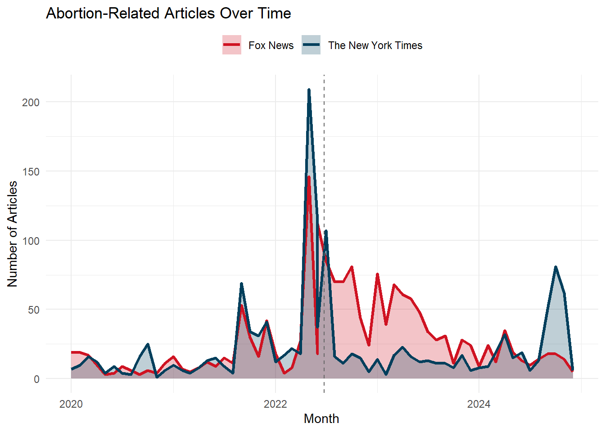
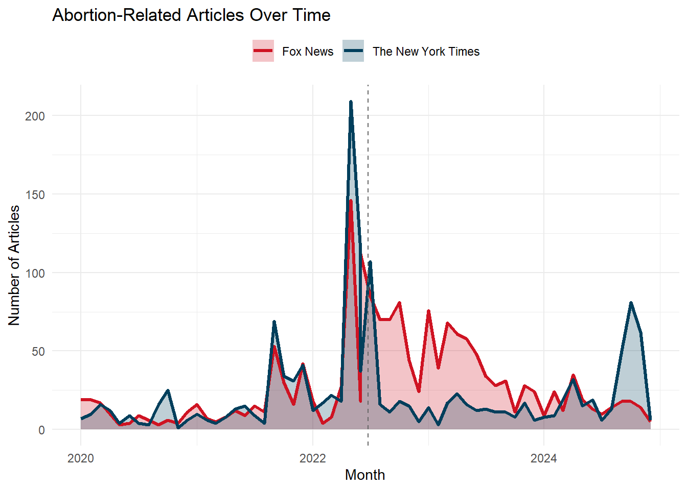
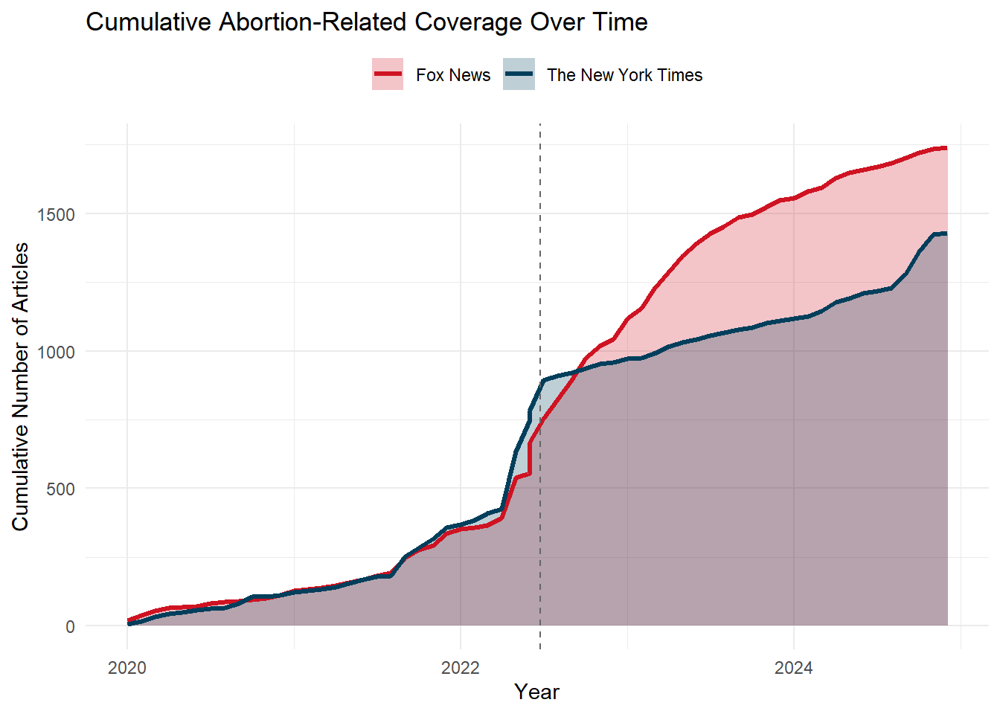

Warning: Using `size` aesthetic for lines was deprecated in ggplot2 3.4.0.
ℹ Please use `linewidth` instead.
Exploring Sentiment, Framing, and State-Level Policy Intersections in U.S. News Coverage
Erika Salvador
Emilie Ward
Maigan Lafontant
April 28, 2025
Long a topic of debate across law, medicine, gender, and religion, abortion has remained one of the most polarizing issues in American public life. That polarization deepened in June 2022, when the Supreme Court’s decision in Dobbs v. Jackson Women’s Health Organization overturned Roe v. Wade, the 1973 ruling that had established a constitutional right to abortion.The decision unsettled not only the legal framework around abortion, but also the way the issue is discussed across the country. As states move in sharply different directions, media coverage has had to grapple with new divisions, new language, and new stakes.
At its core, the public debate still turns on a simple but deeply charged question: is abortion good or bad? How that question gets answered–or even framed–depends heavily on where one looks. News coverage of abortion varies sharply by ideological leaning. Conservative media outlets often emphasize religious and legal arguments by focusing on fetal personhood, state-level bans, and moral appeals (Williams, 2024). In contrast, liberal media frequently frame abortion in terms of bodily autonomy, healthcare access, and gender justice, while emphasizing the disproportionate impact of abortion restrictions on marginalized communities (Human Rights Watch, 2023). These competing narratives do more than reflect existing viewpoints but actively shape public perception of abortion legislation.
In this blog, we examine how abortion is framed by two ideologically distinct media outlets: Fox News and The New York Times. To trace how these narratives evolved, we analyzed abortion-related news coverage from both sources before and after the Dobbs decision. These platforms were chosen not only for their national prominence and broad audiences, but also for their well-documented political leanings–Fox News is widely recognized as a conservative outlet, while The New York Times is identified as liberal-leaning (Pew Research Center, 2014; Mitchell et al., 2020). By comparing these two sources, we aim to better understand how media framing reflects and reinforces broader ideological divides around abortion. Using text and sentiment analysis, topic modeling, and geographic data from the Guttmacher Institute, we explore how media narratives align with state-level abortion laws and how discourse evolves in response to shifting legal landscapes.
We collected a total of 3168 abortion-related news articles for this analysis. Of these, 1739 were published by Fox News and the remaining 1429 by The New York Times, spanning from early 2020 through late 2024. Together, these articles provide a window into how two major media outlets approached abortion coverage across a period of significant legal and political change.
To trace how attention fluctuated over time, we first examined monthly trends in article publication. Both Fox News and The New York Times exhibited visible surges in abortion-related reporting across the 2020-2024 period. While our primary focus is on the Dobbs v. Jackson Women’s Health Organization decision and its aftermath, earlier spikes in coverage are also notable. Attention intensified sharply in September 2021 with the enactment of Texas’s SB8 “heartbeat bill”, surged again in May 2022 when Politico leaked the Supreme Court’s draft opinion in Dobbs, and peaked in June 2022 when the Court officially overturned Roe v. Wade. Additional upticks are visible during the November 2022 midterm elections, where abortion rights featured prominently on state ballots, and during the August 2023 Ohio special election focused on abortion protections.
Warning: Using `size` aesthetic for lines was deprecated in ggplot2 3.4.0.
ℹ Please use `linewidth` instead.
Interestingly, while monthly patterns highlight media reactions to specific events, they do not fully capture the overall scale of coverage. To provide a cumulative perspective, we plotted the running total of abortion-related articles over time. Although The New York Times often displayed sharper monthly peaks, the cumulative view reveals a different story: over the long term, Fox News produced a significantly larger volume of abortion-related coverage. Following the Dobbs decision, the total number of articles rose sharply for both outlets, but Fox News continued to publish abortion-related content at a faster pace. By the end of 2024, Fox News had amassed a much larger body of coverage compared to The New York Times.
